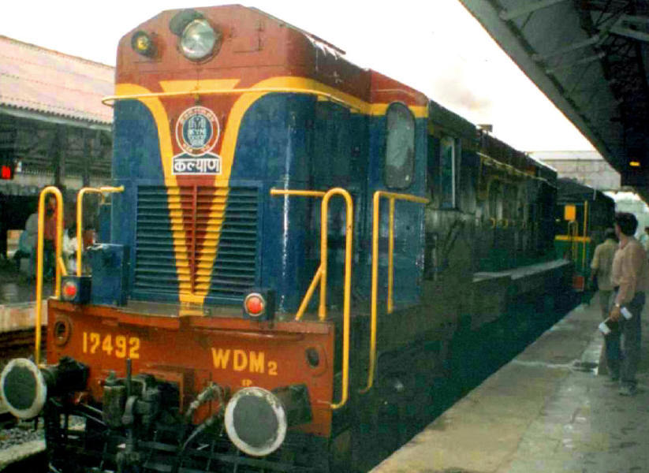

**Previous**
**Next**

This is the old-gold name in Indian Railway for luxury and speed. Rajdhani is the second fastest train type in India avg speed going upto 80kmph.
- Difference between Rajdhani and Duranto:
- Duranto has no stops between two large stations. Rajdhani stops on few major stations on the route.
- Few stops in Rajdhani makes a tiny difference in time taken in Rajdhani Vs Duranto.
- Rajdhani is still preferred choice of traveling long distances. Because travelers get free food, snacks, tea/coffee on the board!
Which Duranto does nt.
- Rajdhani trains only have AC1, AC2, AC3 classes while each Duranto train has different set of classes.
- Rajdhani trains do not have a Tatkal Quota.
- Other facts:
- The design of the train is very new and different.
- This train has no stops between source and destination station. (except a couple of technical stops)
- It is the second fastest travel way to travel on land in India.